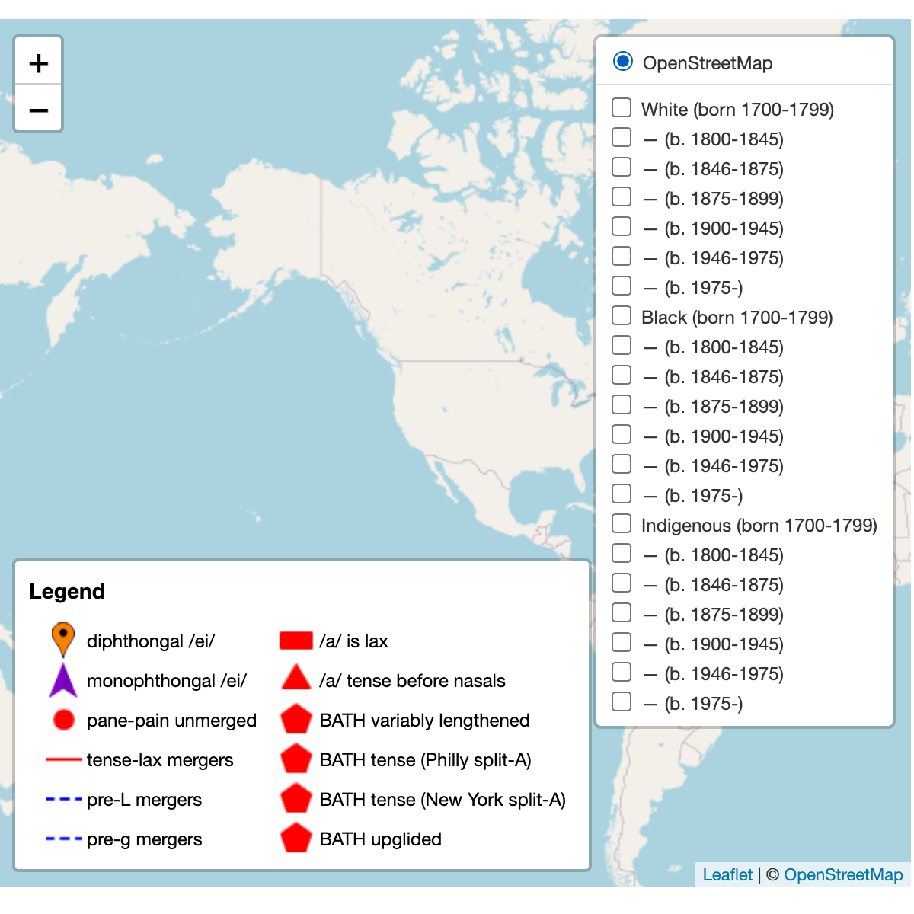

The American English history map is an attempt to make a timeseries map for all historical periods of English in the Americas. It presents comprehensive histories of mainland North American English, African American Vernacular English, Indigenous pidgins and Carribean creoles. This is meant to be a supplement to maps like Rick Aschmamn's, by adding sequenced series of data that apply groups outside of the targets of the Atlas of North American Ennglish.
The maps are presented like this:
|
 |
The ethnic symbols are there due to necessity, as the significant ethnic variation in pronunciaton in North America, makes it difficult to compare accent variation on a single map. The symbols on each dot represent the source of the data. With geographic location, References for the autobiography are shown at the bottom of each page.
Phonemic symbols
The first section is the monophthongs shown in Table 1, with examples words taken from Well's lexical sets written beneath them. Those without the : length mark are the checked vowels, often refered to as "short" vowels. The two with the length mark are the long monophthongs (ANAE: "ingliding vowels").
|
A few marginal monophthongs are not given symbols: The "New England Short O" (transcribed in other sources as /ɵ/) which distinguished "road/rode", the monophthongal /e:/ phoneme distinguishing "pane/pain" in Newfoundland, and the raised BATH in New York City English, which distinguishes can (verb)/can (noun).
In table 2, we see the diphthongs. They are all ended with "u" or "i" matching the binarist notation used by Kurath and the Atlas of North American English.
|
They are described as diphthongs, though their quality varies. There is debate over whether /iu/ is a phoneme or simply /uu/ preceded by a consonant cluster.
While vowels before /r/ in rhotic accents (/3:r/ is treated as a vowel here, this is controversial.) can be described as allophones of other vowels, several of them become vowels on their own right in non-rhotic, i.e. r-dropping dialects. Symbols vowels before post-vocalic r are shown in Table 3.
| /i:r/ near | /u:r/ cure |
|
| /e:r/ chair | /ə:r/ | /o:r/ force |
| /a:r/ start | /ɔ:r/ north |
The length symbol ":" is simply to keep /e:r/ and /i:r/ visually distinct from "er" "ir" in spelling, and doesn't necessarily describe the vowels' length. The "Vowels Before r" map includes both the rhotic vowels in Table 3, and vowels before intervocalic r.
Consonants are written here in this order:
| labial | dental | alveolar | palatal | velar | glottal | ||
| sonorant | nasal | /m/ ma | /n/ no | /ng/ | |||
| approximant | /l/ lull | /r/ roar | /w/ | ||||
| resonant | plosive/stop* | /p/: pop /b/: bob | /t/: taught /d/: did | /h/ ha |
|||
| fricative | /f/:foe /v/:vov | /th/: thaw /th/: though | /s/: so /z/: zoo |
*So called voiced stops often lack voicing in English, and are better describes as unaspirated stops.